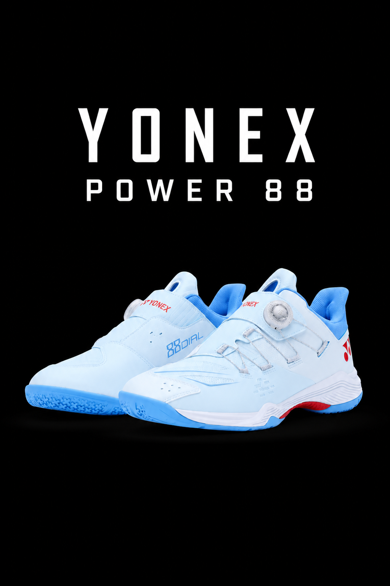

YONEX POWER 88

The Yonex Power Cushion 88 (primarily known as the Power Cushion 88 Dial) is a premium, laceless badminton shoe designed for quick footwork and explosive energy return. It utilizes the BOA Fit System with micro-adjustable dials, eliminating traditional laces to provide an incredibly secure, customizable fit.
KEY FEATURES AND TECHNOLOGIES:
- BOA Fit System: Replaces laces with a turn-to-tighten dial that secures the foot uniformly from ankle to toe, eliminating pressure points.
- Power Cushion+: A shock-absorbing resin insert in the heel. Yonex claims it can bounce a raw egg dropped from 12 meters safely back up to 6 meters.
- Power Graphite Sheet: A lightweight graphite plate built into the midsole that enhances mid-foot stability and prevents twisting during sudden lateral movements.
- Radial Blade Sole: The outsole is designed with varying pinwheel-shaped indentations to maximize grip and support quick dashes and sudden stops.
- Durable Skin Light: A breathable, seamless polyurethane-based upper that molds to the foot without weighing it down.